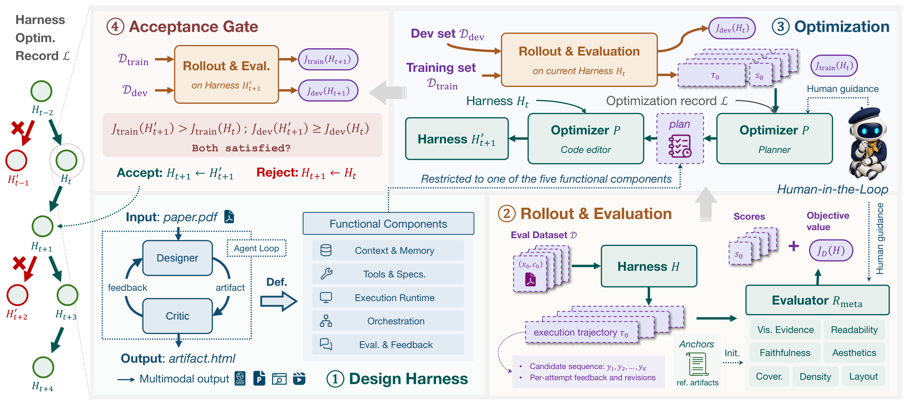
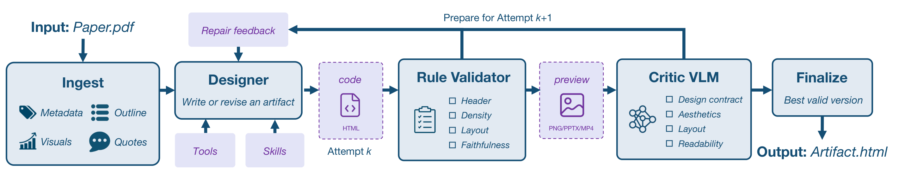
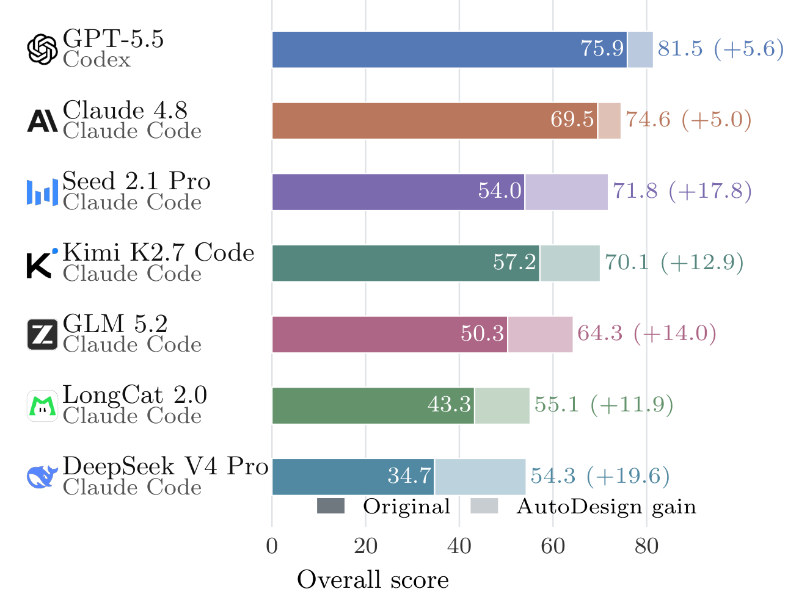

AutoDesign
Meta-Harness Optimization for Long-Horizon Agentic Design
Meituan · MBZUAI · Huazhong University of Science and Technology · Peking University · Tsinghua University · The Chinese University of Hong Kong · Shanghai Jiao Tong University
Improve the harness. Keep the model fixed.
Why optimize the harness?
Scientific design takes more than a single generation. An agent must understand the paper, select evidence, write layout code and repair the rendered result. Static workflows repeat the same failures. AutoDesign turns the surrounding harness into an optimization target, using human-annotated reference artifacts and optional natural-language guidance to ground design preferences.
Input, model and output
Input: a paper PDF, its figures and tables, and design constraints. A fixed LLM or MLLM works inside the harness. The inner loop outputs an editable artifact and its execution trajectory. Across tasks, the meta-harness outputs an improved DesignHarness. Model weights remain unchanged.
How PosterBench judges quality
The Main Track contains 100 papers across five disciplines. PosterBench-mini is a shared 10-paper subset for controlled comparisons. The frozen external benchmark is separate from the evaluator used during harness optimization. Seven weighted dimensions assess source truth, scientific communication and rendered usability. Severe failures impose score ceilings.
Faithfulness 10 · Coverage 10 · Density 15
Visual evidence 10 · Layout 20
Readability 25 · Aesthetics 10
Key methods of AutoDesign
1
Improve the artifact.
The designer writes or revises
the current artifact. A rule validator checks layout and source integrity, while a visual critic reviews the rendered design. Their feedback guides localized revision. Within this loop, the harness stays fixed.
2
Improve the harness.
Training tasks produce artifacts,
trajectories and quality scores. The optimizer reads this evidence and the persistent history, identifies recurrent failures, proposes a plan and edits exactly one harness component. Its five options are context and memory, tools and specifications, execution runtime, orchestration, or evaluation and feedback. The evaluator is initialized from human-annotated references and stays fixed during autonomous optimization. Revising it requires explicit human guidance.
3
Accept only transferable gains.
Promote the
candidate only if training quality improves and development quality does not decline. Otherwise retain the old harness. Development traces and scores stay outside the proposer and its memory. Accepted and rejected training-side updates remain available for comparison and rollback.
Method: Meta-Harness Optimization (Overview)

From a paper to an editable poster
Source ingestion preserves metadata, figures and evidence locations. The designer authors editable HTML and the rule validator checks each attempt. Failed blocking checks trigger visual critique and localized revision. This implementation permits up to 12 attempts, then applies history-based fallback under integrity constraints if needed. Finalization renders and prepares the selected candidate for delivery.

Main Track: matched comparison
Selected Table 1 rows use the same Claude Code and Claude 4.8 configuration. AutoDesign scores 78.32, ahead of Claude Design by 7.45 points. The comparison below reports overall PosterBench scores on the 100-paper Main Track.
System | Main-track score /100 |
|---|---|
AutoDesign | 78.32 |
Claude Design | 70.87 |
Claude Code | 70.01 |
OpenDesign | 69.45 |
Gains across seven configurations
On PosterBench-mini, attaching DesignHarness raises the mean from 54.99 to 67.39: a gain of 12.40 score points. The original chart reports rounded before-and-after values for seven fixed agent/model configurations.

Human preference
Eleven reviewers supplied 933 valid system-blind ranking judgments. AutoDesign has the highest Bradley–Terry estimate: 64.0%, with a 95% interval of 55.2–77.8%, for beating a uniformly sampled alternative. This estimate is not a raw win rate.
Scope and open questions
Formal evaluation covers academic posters. Slides, webpages and videos remain pilot outputs. Better component selection and evaluator evolution are still open research problems. Extending the system requires medium-specific data, objectives, rendering checks and human validation.